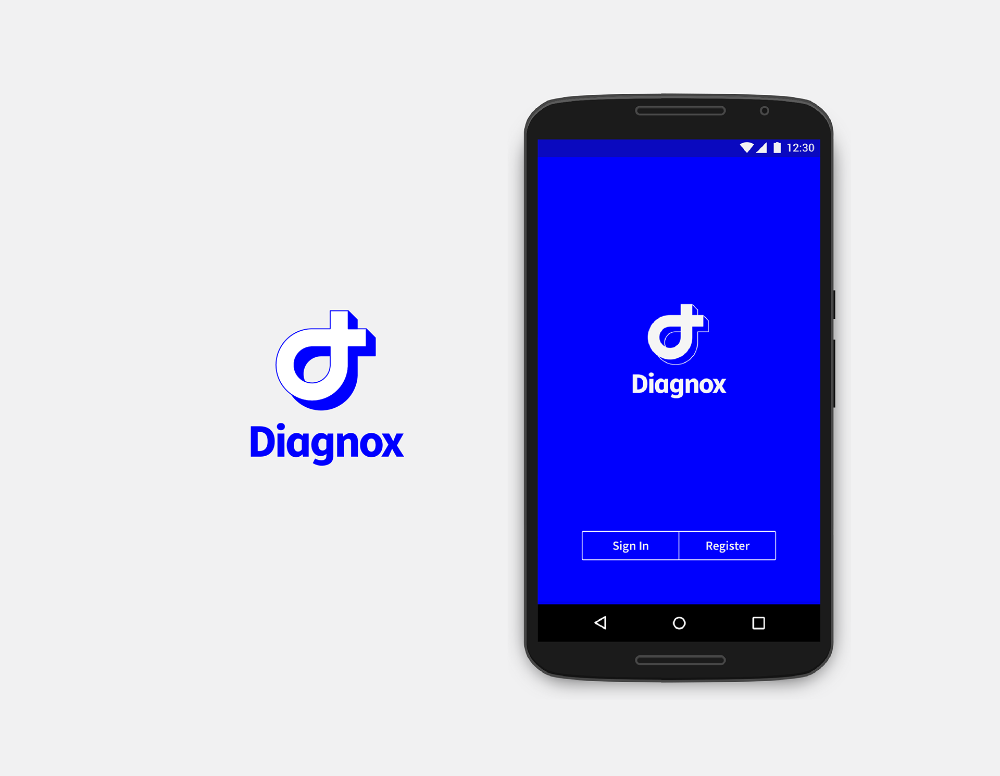
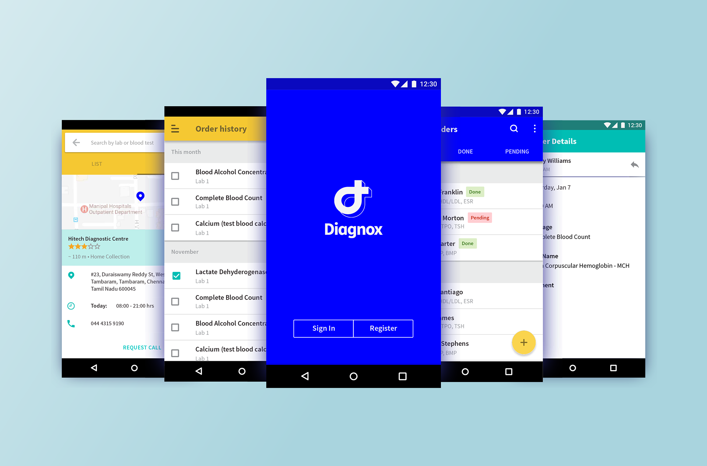
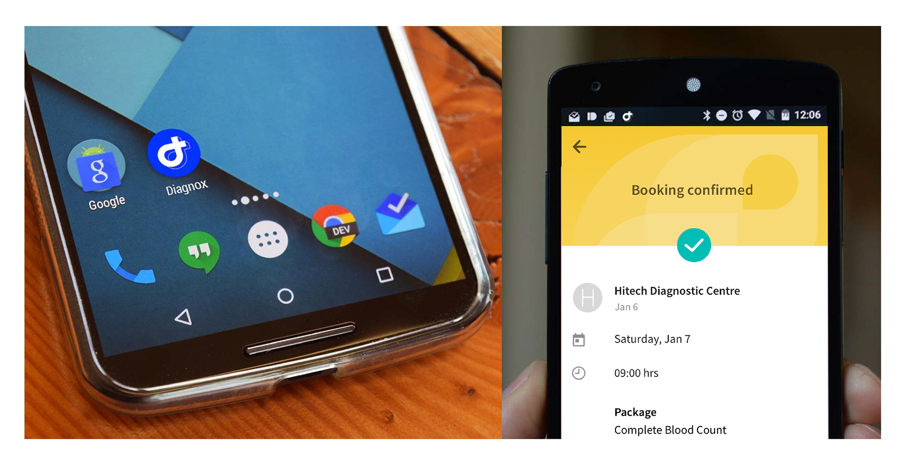
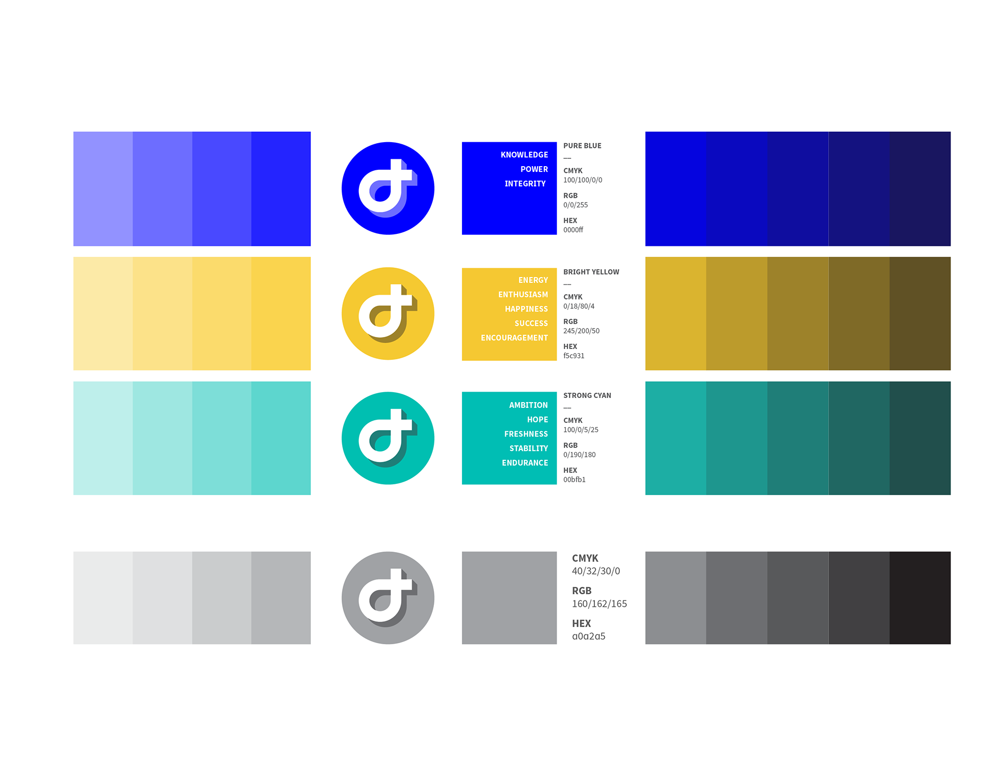
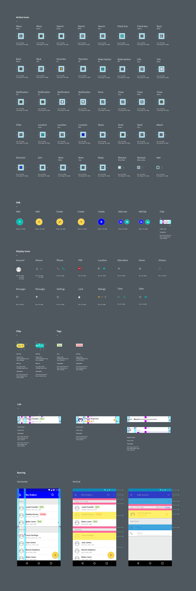
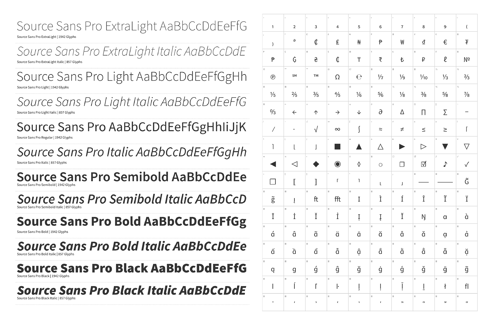
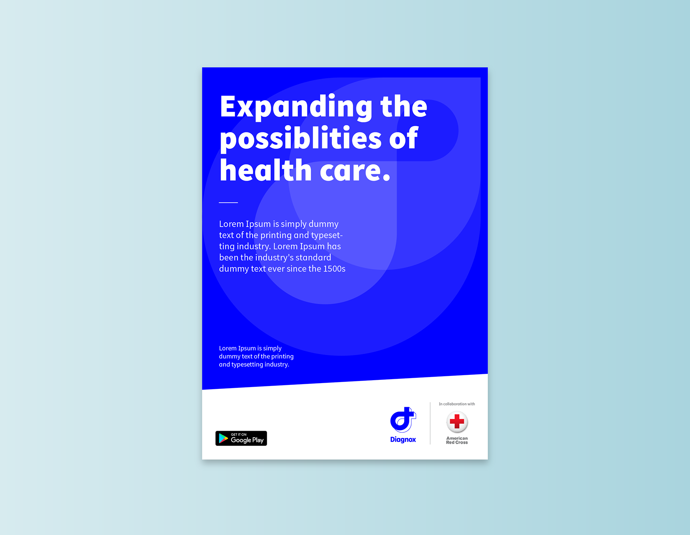
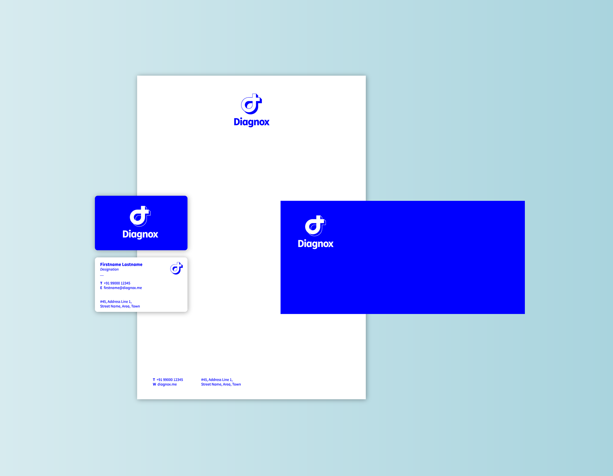

Healthcare UX - Diagnox - 2016-2019
Diagnox: digital health UX for trustworthy, accessible care.
A digital health experience designed to help healthcare stakeholders provide trustworthy, accessible, professional, and personalized care to patients.








Challenge
Diagnox needed a product experience that could serve multiple stakeholders while still feeling trustworthy, usable, and clinically credible. The design had to support patient-facing journeys, clinician needs, healthcare administration, and analysis/reporting modules.
What I did
UX architecture
Developed user flows, wireframes, and information architecture for core patient and clinician journeys.
Analysis modules
Designed analysis and reporting experiences to support better engagement and clinical insight.
Brand and style guide
Created branding and visual system foundations for consistency across mobile and web surfaces.
Outcome
The work helped bridge clinical credibility with consumer-grade usability, supporting Diagnox's position as a trusted digital health partner.